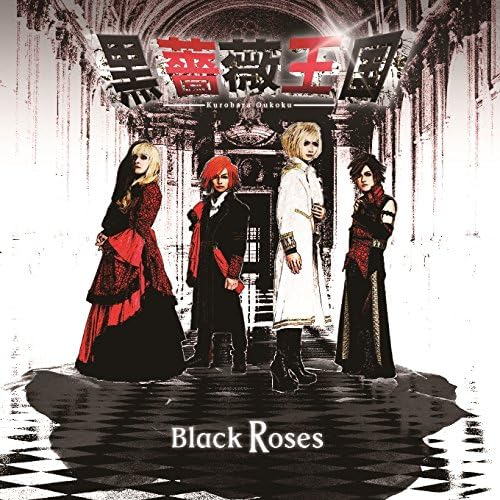

幼き日の私は、漫画家への憧れを胸に、毎日ひたすら絵筆を握り続けていました。物語を紡ぐ喜び、世界を創り出す快感。それは後の全ての創作活動の原点となる、最初の「表現への渇望」でした。
History
真理への道のり — 創造と探求の軌跡
創造の芽生え
音の世界への扉
高校時代、運命的な転機が訪れます。ゲーム音楽の魔力に魅せられ、作曲家への道を志すように。しかし、バンドサウンドとの出会いが、私の音楽観を大きく変革しました。目的は「作曲」そのもの。楽器など手段に過ぎないと、あらゆるパートを試しては探求を重ねる日々。その結果、最も可能性を感じたのがボーカルでした。偶然か必然か、「声」という最も人間的な楽器こそが、私の表現の核となったのです。
革命の序章 — バンド戦記
Gaia Prelude、Mighty Knightsを経て、運命のバンドCandy Drugers第二期のオリジナルメンバーとして本格始動。2枚のCDをリリース。これまでに、NHKのラジオ番組や中日新聞のほか、地元のテレビ・ラジオ局など、数多くのメディアに出演。MUSIC FARMやHEART LANDでの名古屋ワンマンライブは連続ソールドアウト。しかし、より高次の表現を求める私たちは、活動休止という選択をします。

Candy Drugers時代 - βa-βaLa姫と楽屋にて
王国の誕生と独自文化の創出
表現への情熱が途絶えることはありませんでした。ベーシストβa-βaLa姫と共に、黒薔薇王国を結成。より進化した音楽性を追求する中で、「挙手メタル」という謎に包まれた独自文化を創出。MUSIC FARM、吉祥寺CRESCENDOでのワンマンライブでは、ロックとオペラを融合させた歌唱も披露。会場の看板すらも「黒薔薇王国」と化した伝説的な夜もありました。東海ラジオ、BURRN!誌などメディア出演も継続し、2枚のCDをリリース。2018年のライブを最後に、一つの時代に幕を下ろします。

黒薔薇王国 - 2017年川崎Club Citta'にて

"Black Roses"
黒薔薇王国
真理への深潜 — 武術と気功の道
バンド活動休止後、私は全く新たな探求の世界へ足を踏み入れました。気功と武術の奥義を求めて数々の達人の元を訪ね、ついにその中心概念を体得。音楽で培った「表現」と、武術で得た「身体の真理」。この二つの融合が、現在の私の思想的基盤を形成しています。
統合と新たな革命
そして現在。バンド時代には実現できなかった多分野への展開——ライブ配信、執筆活動、学業——これら全てを統合しながら、ソロ活動として新たな楽曲制作にも励んでいます。音楽、文学、哲学、武術、気功、ゲーム開発。一見バラバラに見えるこれらの活動は、実は一つの問いに向かって収束しています。
『この世界の"真理"とは、一体何か？』
漫画を描いていた幼い手が、今では気功を操り、ペンを握り、マイクを掴む。全ての道が、この問いへと続いていたのです。